Volunteer Instructions
First, sign up here. You only need to sign up once. Note that it may take a few days for us to activate your Gaia account.
Each time you are planning a hiking trip, follow these instructions to classify points. The resulting data will be used to train an algorithm to recognize snow algae, and discover what triggers snow algae blooms and evaluate their impact on climate.
Quick Instructions:
- Visit the
web app and download waypoints.
- Do this 1-3 days before your hike. (If you plan too far in advance, the satellite imagery will not be up to date.)
- Import waypoints into
Gaia GPS.
- Share folder with casey.engstrom@gmail.com
- Hike to waypoints, collect data
- Click waypoint, take photo, title as either “Algae” or “Other”
- Upon return, check that data is sync’d.
Detailed Protocol:
-
Visit the web app and download waypoints.
A. Center the map near where you will be hiking (Click and drag and scroll, or search by location at top)
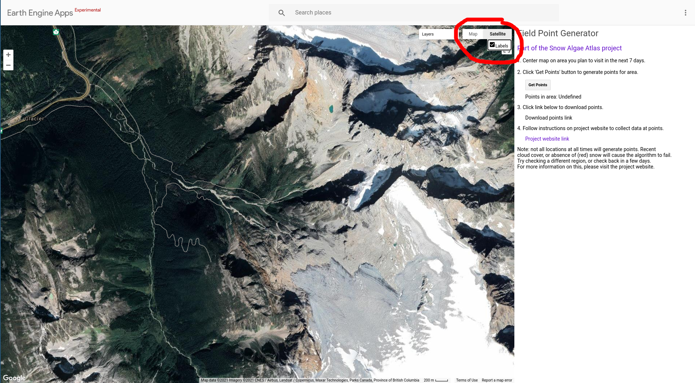 Pro tip: Toggle between Terrain, Satellite, and Street layers using the buttons in the upper left corner.B. Click ‘Get Points’ button to generate waypoints for that region. Wait for layers to load. If any points are found, they will appear as red dots on the map. 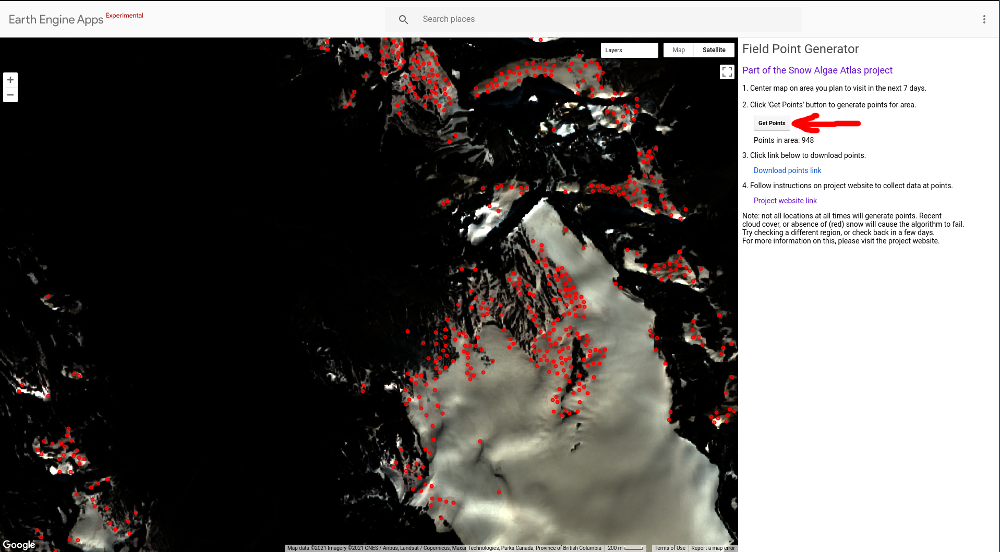 C. Click ‘Download points link’ to download waypoints.
D. A prompt will automatically pop up, asking you where to save the waypoints. The default settings are fine, or you can name the file.
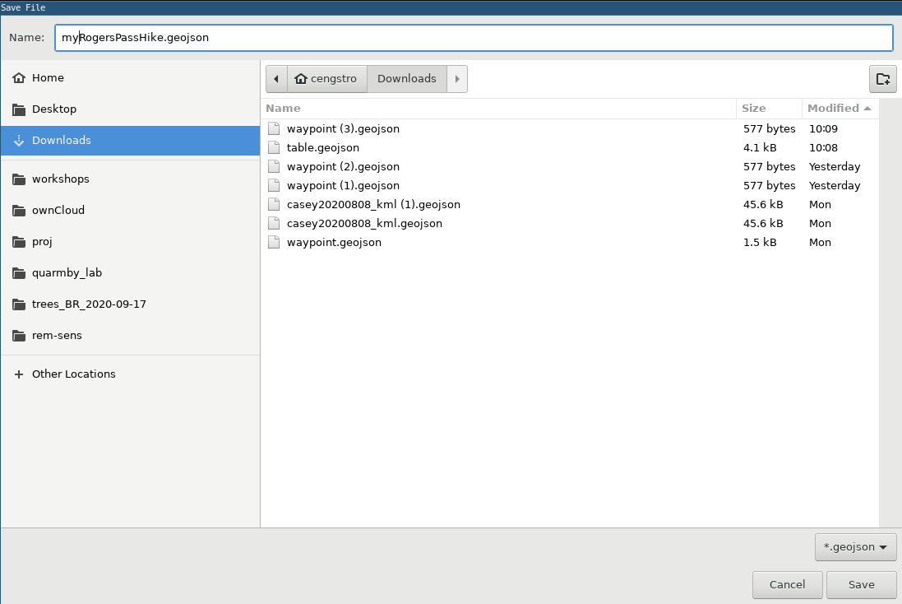 E. Optional Repeat if you want to download for a larger region (e.g. a multi-day trip). -
Import waypoints into Gaia GPS.
If this is your first time, click ‘Sign Up For Free’, and enter the same email you used to sign up for the project. Choose a password.
A. On the left menu, click ‘Import Data’, then ‘Select Files’, then navigate to where you saved the waypoints.
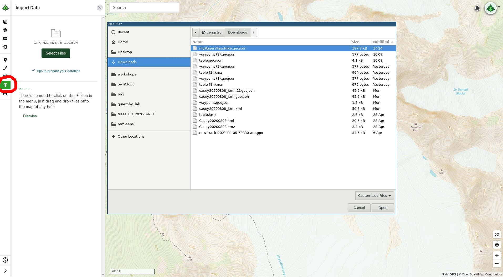 B. Click green ‘Save’ button to save the waypoints to Gaia Cloud.
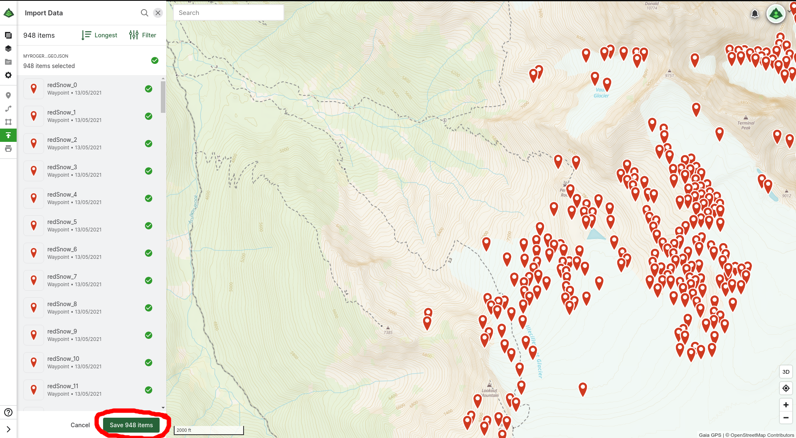 The waypoints should appear as red pins on your map screen.C. Click the icon to drop down the upper-right menu. Click ‘Folders’.
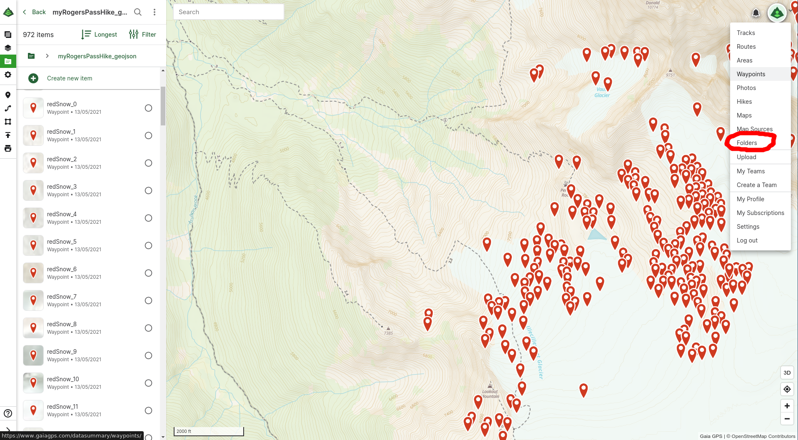 D. Click the top link to open the data you just imported. 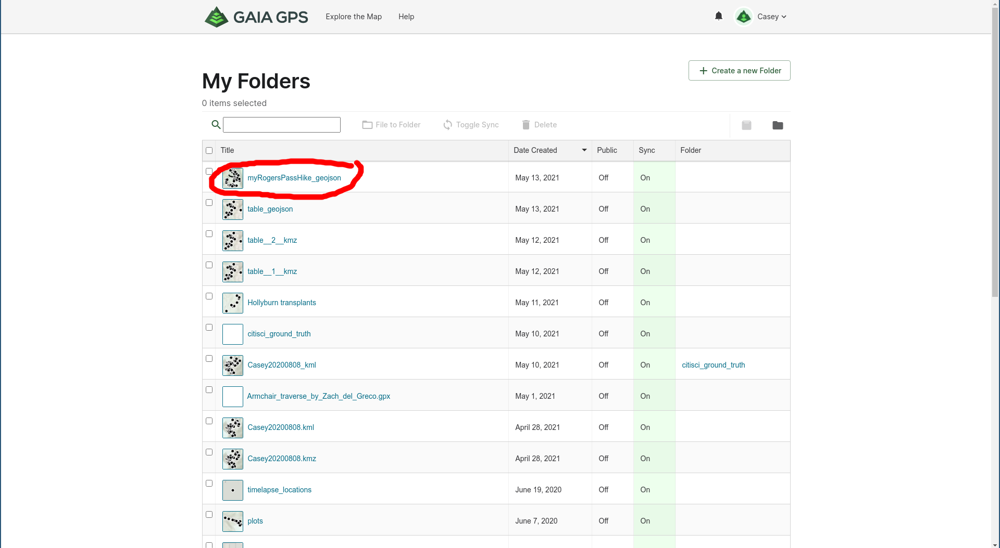 E. Important In the right menu, below Share This Folder enter my email casey.engstrom (at) gmail.com, and click ‘Share’. 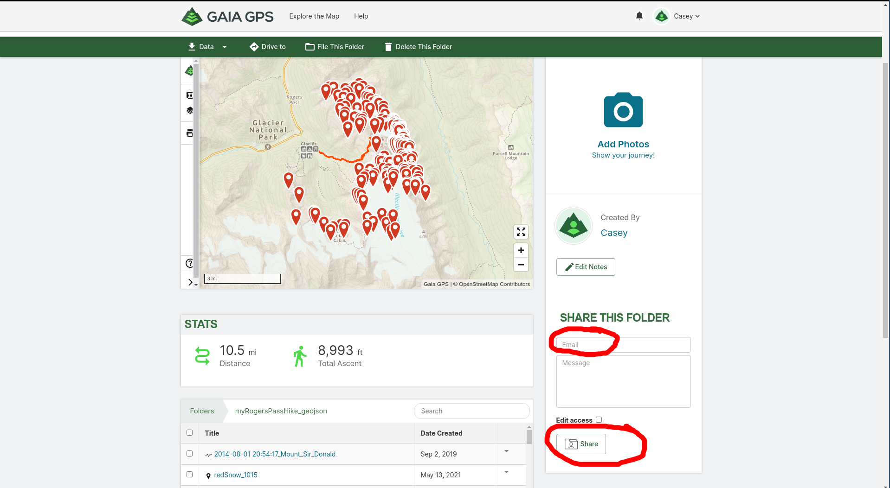F. Check that the points appear on your smartphone Gaia GPS app.
If this is your first time, download Gaia GPS from your smartphone app store, and log in using the same credentials you used for the Gaia website.Pro tip: If you don’t see the points on your Gaia app, check the account is set to automatically sync. 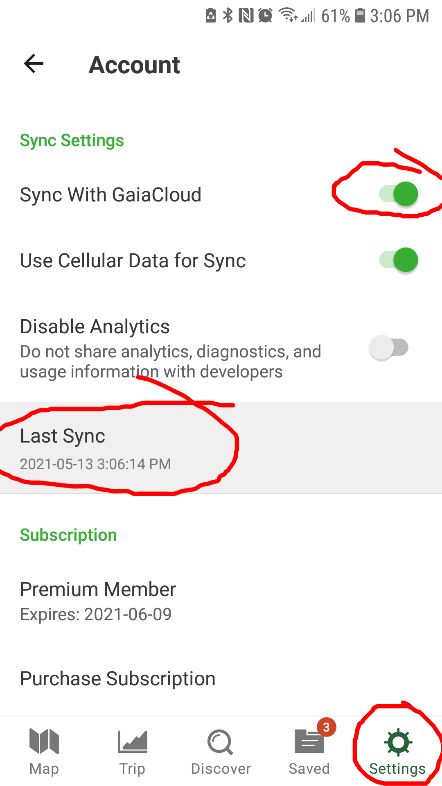
-
Hike to waypoints, collect data. Print/download field instructions
A. Navigate using the blue dot until you are at a waypointB. Click on the red waypoint, and click the ‘Take Photo’ icon to enter photography mode. 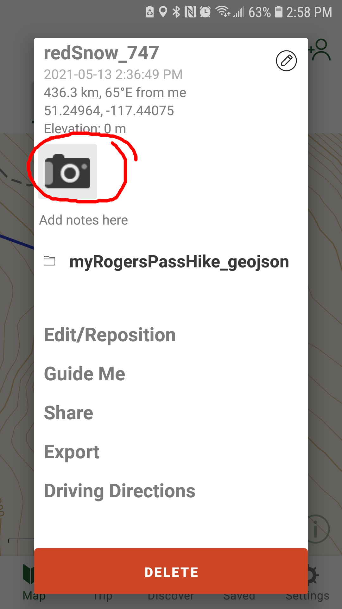 C. Take a photo of the ground below your feet. Take photo of the ground from approximately waist level. Bonus points if you include your boots for scale!
D. Important Title the photo as either ‘Algae’ or ‘Other’. Other responses will not be recorded! Only choose ‘Algae’ if the snow appears pink or red, otherwise say ‘Other’.
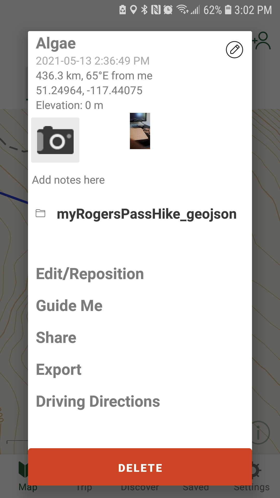 Optional: Add notes about the ground cover, e.g. ‘dirty snow with needles’ Check that the photo and title appear on the waypoint, and then close the waypoint.
E. Important: You do NOT need to visit all your points! Exercise best judgement, be alert for mountain hazards, and do not visit a point if it threatens your safety review the liability waiver. Visiting 10 - 30 points per site is a reasonable target, (although more is better), but many points will likely not be accessible. -
Upon return to service, check that data is sync’d.
A. Check gaiagps.com and check that your points are updated. B. If not, check the app settings, click the ‘Last Sync’ button to manually sync.
Casey Engstrom
PhD Candidate in Molecular Biology
Biologist and climber exploring the snow algae microbiome in the mountains